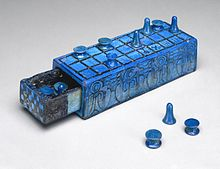

A game is a structured type of play, usually undertaken for entertainment or fun, and sometimes used as an educational tool. Many games are also considered to be work (such as professional players of spectator sports or games) or art (such as jigsaw puzzles or games involving an artistic layout such as Mahjong, solitaire, or some video games).Games are sometimes played purely for enjoyment, sometimes for achievement or reward as well. They can be played alone, in teams, or online; by amateurs or by professionals. The players may have an audience of non-players, such as when people are entertained by watching a chess championship. On the other hand, players in a game may constitute their own audience as they take their turn to play. Often, part of the entertainment for children playing a game is deciding who is part of their audience and who is a player. A toy and a game are not the same. Toys generally allow for unrestricted play whereas games present rules for the player to follow. Key components of games are goals, rules, challenge, and interaction. Games generally involve mental or physical stimulation, and often both. Many games help develop practical skills, serve as a form of exercise, or otherwise perform an educational, simulational, or psychological role. Attested as early as 2600 BC,games are a universal part of human experience and present in all cultures. The Royal Game of Ur, Senet, and Mancala are some of the oldest known games.